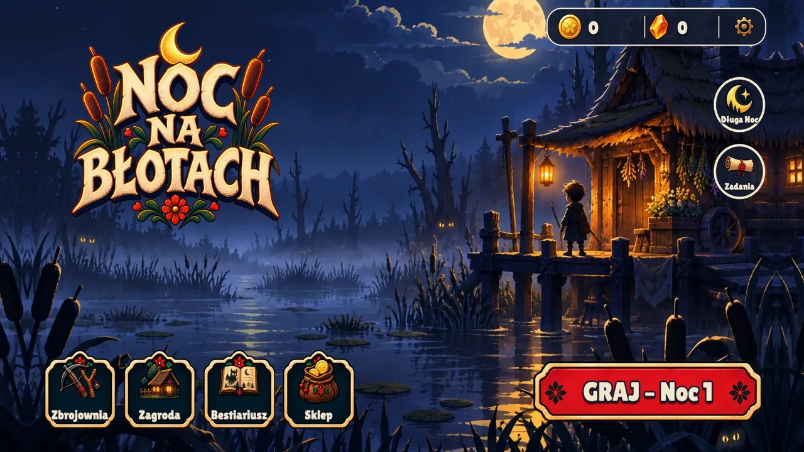

← Firewisp Studio
Playable in the browseriPhone version in the works
Bog Night
Keep the hut standing until sunrise.
Creatures from Polish folklore — strzyga, utopiec, will-o'-the-wisps, a werewolf — walk the boardwalks toward your hut every night. You hold them off with torches, salt, a rowan bow and, when it gets bad, a powder keg. Three worlds, 36 nights, bosses that change form halfway through. A landscape game: best on a laptop or with the phone turned sideways.

Screens


What you do
- Tap the weapon, tap the laneOne hand, no joystick. Each weapon has a type the creatures are weak to; switching at the right moment is the whole skill.
- Slavic bestiaryFifteen creatures with their own habits, and bosses with three phases that change what works against them.
- Day and nightBy day you repair, upgrade the homestead and pick herbs; by night you hold the door. Three regions, twelve nights each.
- Hand-paintedBackgrounds, creatures and the hut are painted art, with music and sounds synthesized for the game.